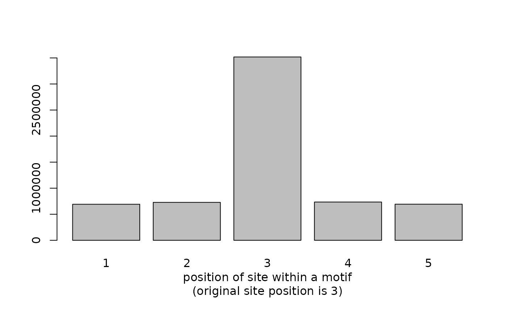
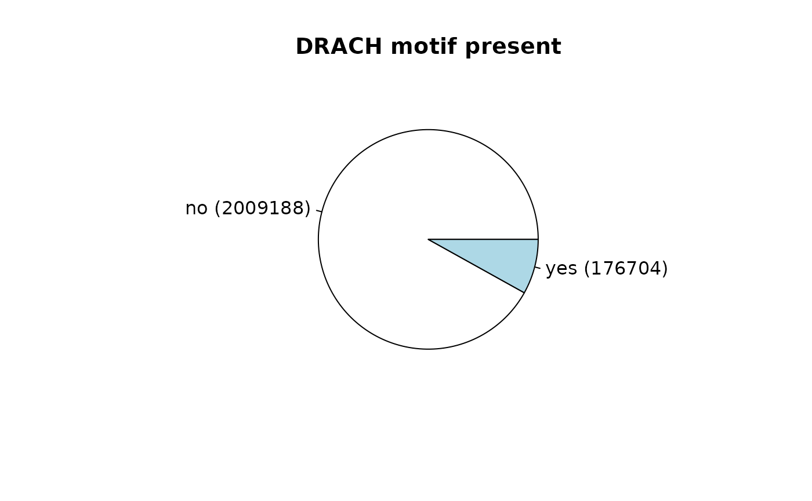
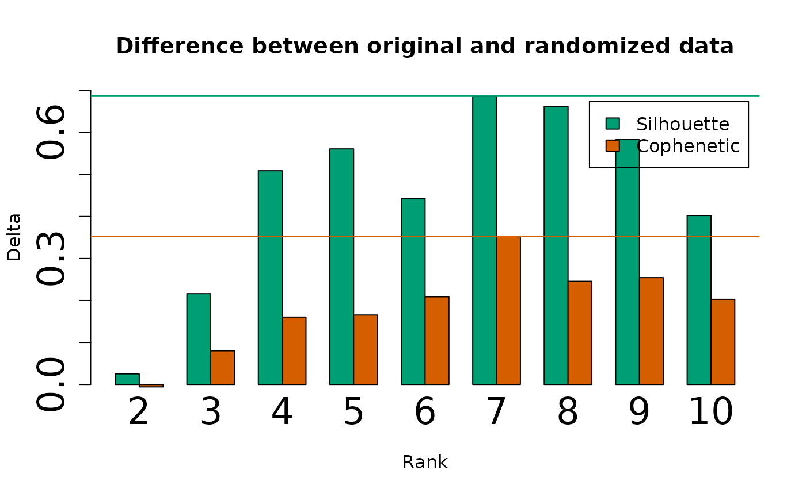
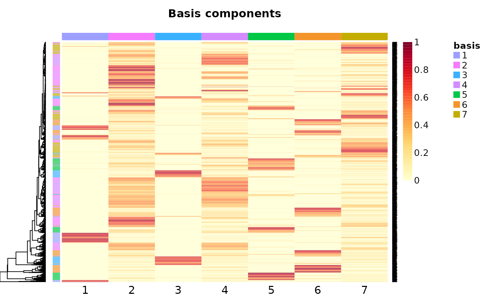
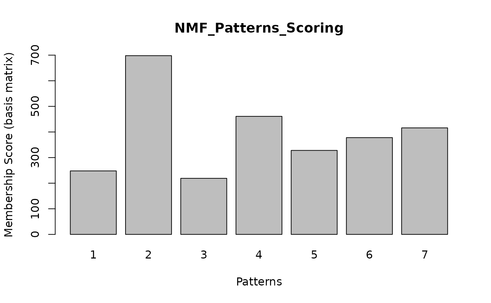

vignettes/JACUSA2helper-nanopore.Rmd
JACUSA2helper-nanopore.RmdIn the following, the workflow for use case 3 from (Piechotta20221?) is presented. Data for use cases 1-3 can be downloaded to repeat the analysis.
Use read_result to read JACUSA2 output and filter the data set.
To repeat the Nanopore analysis from Piechotta et al. (2021) download the following data: * WT vs. KO and * WT vs. IVT. Depending on your bandwidth the Download might take some time. Make sure, you have approx. 20GB of main memory available.
# files to read
files <- c(
"/storage/zenodo/use_case3/WT_vs_KO_call2_result.out.gz",
"/storage/zenodo/use_case3/WT_vs_realIVT_v202_call2_result.out.gz"
)
# descriptions corresponding to files
meta_conds = c(
"WT_vs_IVT",
"WT_vs_KO"
)In the following, we read multiple JACUSA2 output files and filter sites: * retain sites with “A” in the reference, * retain sites on chromosome 1-22, and X, and * remove sites that are within homopolymers (JACUSA2 filter flag: “Y”).
# read and filter
results <- mapply(function(file, meta_cond) {
result <- read_result(file, nThread = 1) %>%
filter(
ref == "A",
! grepl("Y", filter, fixed = TRUE),
seqnames %in% c(as.character(1:22), "X")
)
result$meta_cond <- factor(meta_cond, meta_conds)
return(result)
}, files, meta_conds, SIMPLIFY = FALSE, USE.NAMES = FALSE)
# convert and concatenate GenomicRanges
results <- unlist(as(results, "GRangesList"))
# filtered sites per file / meta condition
table(results$meta_cond)
#>
#> WT_vs_IVT WT_vs_KO
#> 2015555 1503040read_results
An other option is to read the data set via read_results - see vignette(Introduction to meta conditions with JACUSA2helper). This approach will consume much more main memory. We recommend to read big data sets serially with read_result and combine them afterwards.
The “info” field contains meta information for sites, such as detailed INDEL statistics. To save memory, we manually unpack the “info” field and select the following keys: * “insertion_score” and * “deletion_score.” We will use these data during the model training.
unpacked_info <- unpack_info(results$info, cond_count = 2, keys=c("insertion_score", "deletion_score"))
mcols(results) <- cbind(mcols(results), unpacked_info)We continue to reduce the data set by selecting only relevant columns and renaming “score” column to “call2_score” for consistency:
mcols(results) <- mcols(results)[c("meta_cond", "score", "insertion_score", "deletion_score")]
colnames(mcols(results))[colnames(mcols(results)) == "score"] <- "call2_score"
results
#> GRanges object with 3518595 ranges and 4 metadata columns:
#> seqnames ranges strand | meta_cond call2_score insertion_score
#> <Rle> <IRanges> <Rle> | <factor> <numeric> <numeric>
#> [1] 1 14411 - | WT_vs_IVT 0.182221 0.973777
#> [2] 1 14415 - | WT_vs_IVT 0.200339 NA
#> [3] 1 14416 - | WT_vs_IVT 0.279846 NA
#> [4] 1 14418 - | WT_vs_IVT 0.312013 1.740745
#> [5] 1 14419 - | WT_vs_IVT 1.263700 0.236266
#> ... ... ... ... . ... ... ...
#> [3518591] X 155943748 + | WT_vs_KO 1.251611 0.1979329
#> [3518592] X 155943750 + | WT_vs_KO 0.124106 0.0101097
#> [3518593] X 155943754 + | WT_vs_KO 0.936613 0.0560419
#> [3518594] X 155943755 + | WT_vs_KO 0.256918 1.0942557
#> [3518595] X 155943761 + | WT_vs_KO 0.280098 2.7659899
#> deletion_score
#> <numeric>
#> [1] -0.00084858
#> [2] 0.84031855
#> [3] NA
#> [4] 0.01443832
#> [5] 0.13743735
#> ... ...
#> [3518591] NA
#> [3518592] 0.4474059
#> [3518593] 0.0352544
#> [3518594] 0.2855172
#> [3518595] NA
#> -------
#> seqinfo: 31 sequences from an unspecified genome; no seqlengthsresults now consists of locations and scores for sites from all files and meta_conds.
We extend the coordinates of a site by 2nt in each direction:
unique_regions consists now of 5nt wide coordinates around all sites with the site positioned in the middle (= position 3). We calculate the position of each site in overlapping unique_regions:
# compute overlap
hits <- findOverlaps(results, unique_regions)
# corresponding overlap in ...
overlap_regions <- unique_regions[subjectHits(hits)]
# and ...
overlap_results <- results[queryHits(hits)]
# coordinates of overlapping region: contig:start-end:strand
# bin sites in unique_regions
overlap_results$region <- paste0(
seqnames(overlap_regions), ":",
start(overlap_regions), "-", end(overlap_regions), ":",
strand(overlap_regions)
)
# add site position within extended region
overlap_results$position <- start(overlap_results) - start(overlap_regions) + 1
barplot(table(overlap_results$position), xlab = "position of site within a motif\n(original site position is 3)")
The pre-processing is almost done, the data frame should contain the following columns:
mcols(overlap_results)
#> DataFrame with 6365925 rows and 6 columns
#> meta_cond call2_score insertion_score deletion_score
#> <factor> <numeric> <numeric> <numeric>
#> 1 WT_vs_IVT 0.182221 0.973777 -0.00084858
#> 2 WT_vs_IVT 0.200339 NA 0.84031855
#> 3 WT_vs_IVT 0.200339 NA 0.84031855
#> 4 WT_vs_IVT 0.279846 NA NA
#> 5 WT_vs_IVT 0.279846 NA NA
#> ... ... ... ... ...
#> 6365921 WT_vs_KO 0.936613 0.0560419 0.0352544
#> 6365922 WT_vs_KO 0.936613 0.0560419 0.0352544
#> 6365923 WT_vs_KO 0.256918 1.0942557 0.2855172
#> 6365924 WT_vs_KO 0.256918 1.0942557 0.2855172
#> 6365925 WT_vs_KO 0.280098 2.7659899 NA
#> region position
#> <character> <numeric>
#> 1 1:14409-14413:- 3
#> 2 1:14413-14417:- 3
#> 3 1:14414-14418:- 2
#> 4 1:14413-14417:- 4
#> 5 1:14414-14418:- 3
#> ... ... ...
#> 6365921 X:155943752-15594375.. 3
#> 6365922 X:155943753-15594375.. 2
#> 6365923 X:155943752-15594375.. 4
#> 6365924 X:155943753-15594375.. 3
#> 6365925 X:155943759-15594376.. 3Use tidyr::pivot_wider to create the feature matrix:
feature_matrix <- mcols(overlap_results) %>%
as.data.frame() %>%
tidyr::pivot_wider(
id_cols = region,
names_from = c(meta_cond, position),
values_from = c(call2_score, insertion_score, deletion_score),
names_glue = "{meta_cond}_{.value}_{position}",
names_sort = TRUE,
values_fill = 0.0,
)In order to add information if a site is contained in a DRACH motif, we need to retrieve sequence information for the overlapping unique_regions of a site.
If you have a custom FASTA sequence, use Rsamtools::FaFile to load the FASTA file. Otherwise, load a genome from via BSgenome.
library("BSgenome.Hsapiens.NCBI.GRCh38")
# retrieve sequence and convert to character vector
feature_matrix$motif <- getSeq(BSgenome.Hsapiens.NCBI.GRCh38, GRanges(feature_matrix$region)) %>%
as.character() %>% unname()
# number of top 10 motifs
sort(table(feature_matrix$motif), decreasing = TRUE)[1:10]
#>
#> CCAGC GCAGC CCAGG CCACC GCAGG AGAAG CCAAG GGAGG TGAAG GGAAG
#> 30278 29837 23391 23325 21397 20703 20461 20034 19682 17875Next, we add an indicator variable if the DRACH motif ([AGT][AG]AC[ACT]) is present:
feature_matrix$DRACH <- 0
feature_matrix$DRACH[grep("[AGT][AG]AC[ACT]", feature_matrix$motif)] <- 1
tbl <- table(feature_matrix$DRACH)
names(tbl) <- recode(names(tbl), "0" = "no", "1" = "yes") %>% paste0(" (", tbl, ")")
pie(tbl, main="DRACH motif present")
Use saveRDS(feature_matrix, file = "feature_matrix.rds") to store the current state. Use feature_matrix <- readRDS("feature_matrix.rds") to restore previous state.
Next, we need miCLIP data to train our model: * Boulias, * Koertel, and * Koh. We use sites that are present in all three data sets.
The column “region” corresponds to the extended sites around identified miCLIP sites. Make sure that “region” is 1-indexed if you use your own annotation.
head(miclip)
#> contig start end overlap score strand region
#> 1 1 1000217 1000222 Boulias 0 - 1:1000218-1000222:-
#> 2 1 1000221 1000226 Koertel,Koh 0 - 1:1000222-1000226:-
#> 3 1 100022414 100022419 Boulias 0 + 1:100022415-100022419:+
#> 4 1 100022490 100022495 Boulias 0 + 1:100022491-100022495:+
#> 5 1 1000246 1000251 Koh 0 - 1:1000247-1000251:-
#> 6 1 1000520 1000525 Koertel 0 - 1:1000521-1000525:-Intersect regions of feature matrix with miCLIP data (contained in all three data sets: Boulias,Koertel, and Koh):
# dimensions of feature matrix BEFORE intersect with miCLIP
print("Dimensions of feature matrix")
#> [1] "Dimensions of feature matrix"
dim(feature_matrix)
#> [1] 2185892 33
# index vector of regions contained in miCLIP data
i <- feature_matrix$region %in% miclip[miclip$overlap == "Boulias,Koertel,Koh", "region"]
# retain sites that overlap with miCLIP and remove non-numeric columns
nmf_matrix <- feature_matrix[i, ] %>%
as.data.frame()
# dimensions of feature matrix AFTER intersect with miCLIP
print("Dimensions of nmf_matrix after processing")
#> [1] "Dimensions of nmf_matrix after processing"
dim(nmf_matrix)
#> [1] 2748 33The learning algorithm requires the matrix to consist only of numeric value. Remove non-numeric columns:
# dimensions of feature matrix BEFORE intersect with miCLIP
print("Dimensions of feature matrix")
#> [1] "Dimensions of feature matrix"
dim(nmf_matrix)
#> [1] 2748 33
rownames(nmf_matrix) <- nmf_matrix$region
# remove non-numeric columns
nmf_matrix <- nmf_matrix %>% select(-region, -motif)
# set sensible defaults
nmf_matrix[is.na(nmf_matrix)] <-0
nmf_matrix[nmf_matrix < 0] <- 0
# dimensions of feature matrix AFTER intersect with miCLIP
print("Dimensions of feature matrix after processing")
#> [1] "Dimensions of feature matrix after processing"
dim(nmf_matrix)
#> [1] 2748 31Make sure to remove columns such as: “motif” and “region” before you start the learning algorithm.
library(NMF)
#> Loading required package: pkgmaker
#> Loading required package: registry
#>
#> Attaching package: 'pkgmaker'
#> The following object is masked from 'package:S4Vectors':
#>
#> new2
#> Loading required package: rngtools
#> Loading required package: cluster
#> NMF - BioConductor layer [OK] | Shared memory capabilities [NO: bigmemory] | Cores 31/32
#> To enable shared memory capabilities, try: install.extras('
#> NMF
#> ')
#>
#> Attaching package: 'NMF'
#> The following object is masked from 'package:S4Vectors':
#>
#> nrun
nmfSeed('nndsvd')
#> <object of class: NMFSeed >
#> name: nndsvd
#> method: <function>
meth <- nmfAlgorithm(version='R')
meth <- c(names(meth), meth)
small_nmf_matrix <- nmf_matrix[, 1:15]
estim.r <- nmf(small_nmf_matrix, 2:10, nrun = 10, seed = 123456, .opt = 'vp3')
#> Compute NMF rank= 2 ... + measures ... OK
#> Compute NMF rank= 3 ... + measures ... OK
#> Compute NMF rank= 4 ... + measures ... OK
#> Compute NMF rank= 5 ... + measures ... OK
#> Compute NMF rank= 6 ... + measures ... OK
#> Compute NMF rank= 7 ... + measures ... OK
#> Compute NMF rank= 8 ... + measures ... OK
#> Compute NMF rank= 9 ... + measures ... OK
#> Compute NMF rank= 10 ... + measures ... OK
V.random <- randomize(small_nmf_matrix)
# estimate quality measures from the shuffled data (use default NMF algorithm)
estim.r.random <- nmf(V.random, 2:10, nrun=10, seed=123456, .opt='vp3')
#> Compute NMF rank= 2 ... + measures ... OK
#> Compute NMF rank= 3 ... + measures ... OK
#> Compute NMF rank= 4 ... + measures ... OK
#> Compute NMF rank= 5 ... + measures ... OK
#> Compute NMF rank= 6 ... + measures ... OK
#> Compute NMF rank= 7 ... + measures ... OK
#> Compute NMF rank= 8 ... + measures ... OK
#> Compute NMF rank= 9 ... + measures ... OK
#> Compute NMF rank= 10 ... + measures ... OK
DeltaSil <- estim.r$measures$silhouette.consensus - estim.r.random$measures$silhouette.consensus
DeltaCoph <- estim.r$measures$cophenetic - estim.r.random$measures$cophenetic
#how can we select factorization rank ?
ChoseRank <- min(
which(DeltaSil == max(DeltaSil)) + 1,
which(DeltaCoph == max(DeltaCoph)) + 1
)
val_matrix <- matrix(0, nrow = length(DeltaCoph), ncol = 2)
val_matrix[,1] <- DeltaSil
val_matrix[,2] <- DeltaCoph
barplot(t(val_matrix), names.arg = 2:(length(DeltaCoph)+1), beside = TRUE, col = c("#009E73", "#D55E00"), legend.text = c("Silhouette", "Cophenetic"),ylim=range(pretty(c(0, DeltaSil))), xlab="Rank",
ylab="Delta", main = "Difference between original and randomized data",cex.names=2,cex.axis=2)
abline(h=c(max(DeltaSil) , max(DeltaCoph)) , col=c("#009E73", "#D55E00"))
final_nmf_matrix <- nmf(small_nmf_matrix, ChoseRank, nrun=10, seed=123456, .opt='vp3')
#> NMF algorithm: 'brunet'
#> Multiple runs: 10
#> Mode: parallel (3/32 core(s))
#>
Runs: |
Runs: | | 0%
Runs: |
Runs: |==================================================| 100%
#> System time:
#> user system elapsed
#> 14.469 2.906 10.532Use saveRDS(final_nmf_matrix, file="final_nmf_matrix.rds") to store final result.
# basis components
basismap(final_nmf_matrix)
#{r} mixture coefficients coefmap(final_nmf_matrix) #
w <- basis(final_nmf_matrix)
# Table of number of best hits for each pattern"
pattern_instances <- table(apply(w, 1, function(x){ which( x==max(x) ) } ))
barplot(
height = pattern_instances,
names = 1:(dim(w)[2]),
main = "NMF_Patterns_Scoring",
xlab = "Patterns",
ylab = "Membership Score (basis matrix)",
ylim = range(pretty(c(0, pattern_instances)))
)